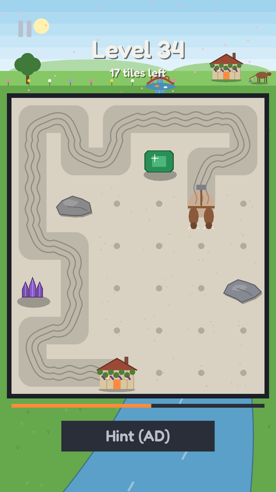
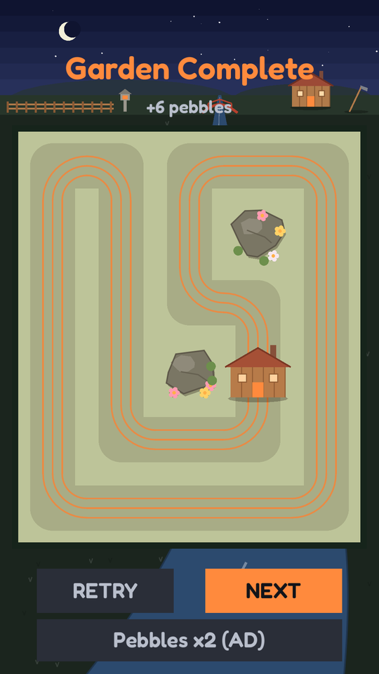
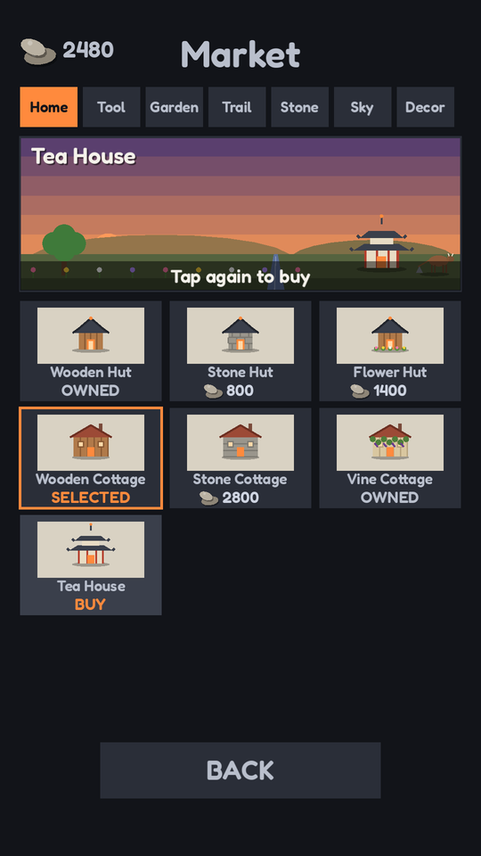

Puzzle · Android
Rake Home
Leave your little hut and rake every patch of sand with one continuous line, then end it back at the hut. Do not cross your own path and walk around the stones. Calm, endless, and your landscape grows as you play.



Features
- Endless journeyGardens grow from small 4x4 yards to large 8x11 gardens and never run out. Every player gets the same garden at the same level.
- Daily GardenA new, larger garden every day with a streak counter and bonus pebbles.
- Zen modeEndless random gardens with no score and no rewards. Just rake.
- Soft soundsEvery tile adds a gentle rustle and a rising note. A finished garden glows and blooms.
- The MarketSpend pebbles on homes, tools from a hoe to a tractor, gems and shells, skies from dawn to winter, and decorations like a koi pond and a bridge.
- GoalsDaily tasks, a daily deal, collection bonuses, a login streak and sixteen achievements.
- English and TurkishOptional rewarded hints. No pushy pop-ups.